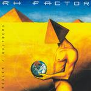

Home Artist links Label link

Rodler/Hultberg - RH Factor
| Artist: | Rodler/Hultberg |
| Title: | RH Factor |
| Label: | PMM PMM0300 |
| Length(s): | 49 minutes |
| Year(s) of release: | 1992/1998 |
| Month of review: | [12/2003] |
Line up
Chris Rodler - guitars
Brett Rodler - drums
Kevin Hultberg - bass, vocals
Tracks
| 1) | Behold The Blue Sky | 5.41
|
| 2) | Sign Of A Mystic Moon | 5.08
|
| 3) | Extrinsic | 6.11
|
| 4) | Miracle Of Great Device | 5.22
|
| 5) | Lifetime | 6.18
|
| 6) | No Sale's Final | 3.14
|
| 7) | Game Of Chance | 4.47
|
| 8) | Handed Down | 5.43
|
| 9) | Winter In July | 7.05
|
Summary
This 1991 material was partly rerecorded and rereleased in 1998. Not much promotion was done back then, which is being corrected now.
The music
Opener Behold The Blue Sky is rather high tempo. Multi vocals at times, sounding somewhat too high pitched during single vocal sections. In instrumental sections the track has some complexity, but the vocal sections are mainly rocky, and due to the somewhat hysterical style at moments not that great. This opening track gives a good idea of what this album is about: strong instrumental sections, embedded in tracks that as a whole are less interesting than those instrumental sections. The vocal parts, however, are necessary to embed the instrumental sections in, and provide them a background to sound good in. The vocals are over the top more often than sounds nice.
In build up the tracks are somewhat Rush like, as already mentioned rather technical, lots of drum fills as well as guitaristics, without stepping out of the composition.
Extrinsic has a strong intro start. Miracle Of Great Device has more laidback vocals, thus escaping from the hysterical sound. Unfortunately the rest of the composition is also more laidback, and therefore lacks the speed and strength that make the other tracks what they are. Game Of Chance is more riffy and highly vocal, becoming only ok towards the end, during its brief instrumental sections. The vocals on Handed Down go from hardrock like aggression to hysteria.
Conclusion
Compositionally this album has quite a bit too offer. The maturity of the compositions, however, is in large part negated by the distracting vocals. Even though it seems harsh to direct all criticism towards one band member, I'm quite convinced that this album would have been a lot better with a good vocalist. Now the lack of Hultberg's vocal abilities makes an album with mostly good compositions pretty much taxing to listen to.
© Roberto Lambooy